Qualitative artifact visualization only. Not generator ranking or refinement-performance evidence.
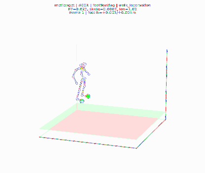
#001 footfloating / walk_locomotion
010315 seed 20483609
the person is walking forward with the cake.
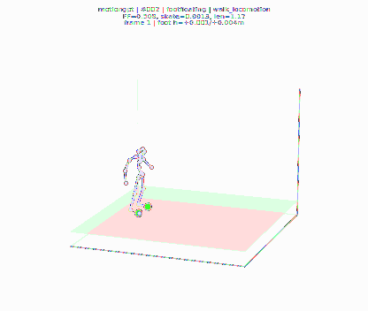
#002 footfloating / walk_locomotion
005537 seed 20380609
a figure walks upstairs without a handrail.
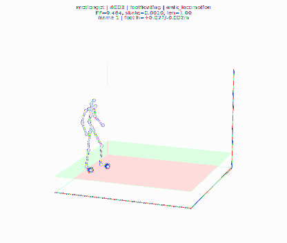
#003 footfloating / walk_locomotion
005163 seed 20373608
a person is strolling around
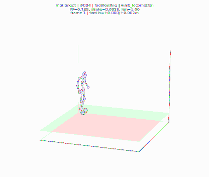
#004 footfloating / walk_locomotion
004601 seed 20353610
someone is climbing a ladder, they walk up 3 steps and then back down.
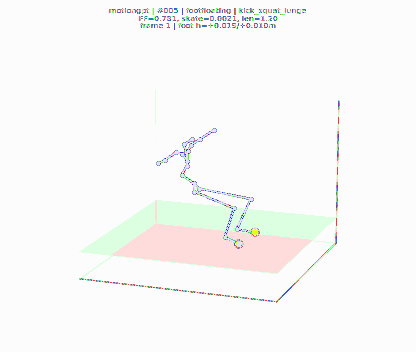
#005 footfloating / kick_squat_lunge
012492 seed 20518609
a person stands with legs shoulder-width apart, slightly bent at the knees, arms outstretched at shoulder height, lowers left arm for several seconds, then brings with arm back to shoulder height.
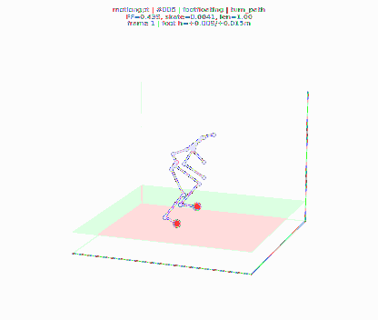
#006 footfloating / turn_path
011402 seed 20503609
a person slowly walks in a 3/4 circle.
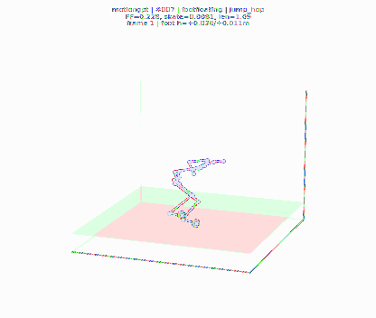
#007 footfloating / jump_hop
006236 seed 20397609
a figure jumps a few times counter-clockwise, then quickly turns clockwise with one big twisting jump, then stumbles backward upon landing.
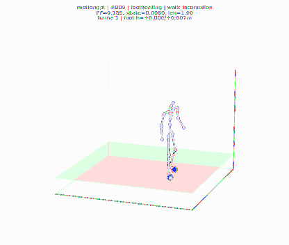
#008 footfloating / walk_locomotion
008069 seed 20432608
the person grabs something in front of them, walks away, walks back, returns it and picks it back up again and begins to walk away again.
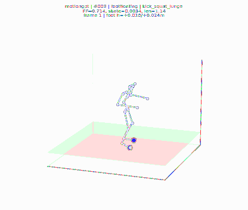
#009 footfloating / kick_squat_lunge
010557 seed 20488609
person puts hands on head then chest then knees then toes
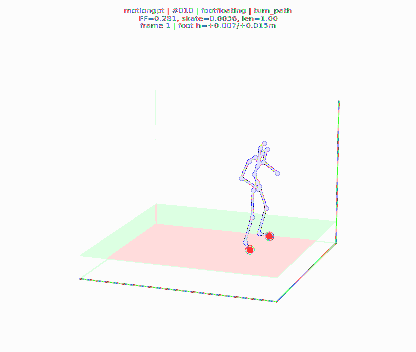
#010 footfloating / turn_path
010116 seed 20474609
a man energetically backsteps, then turns to his right and walks forward, then backsteps again, keeping a spring in his step.
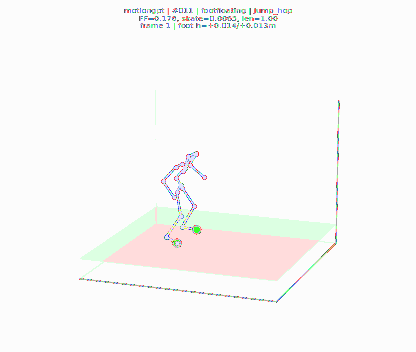
#011 footfloating / jump_hop
008528 seed 20445609
jumping up and down.
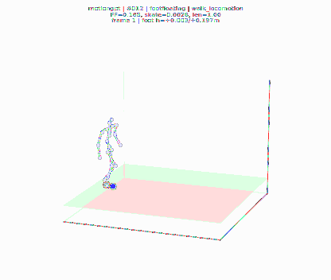
#012 footfloating / walk_locomotion
010553 seed 20487610
a person is walking slowly in zigzag
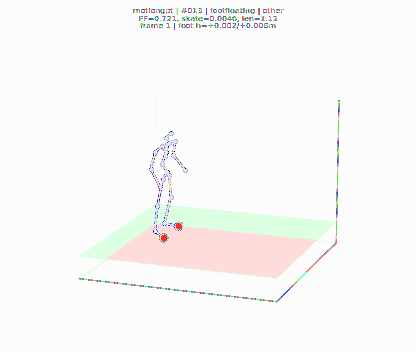
#013 footfloating / other
006106 seed 20393610
a person stands still for a moment, and then staggers forward.
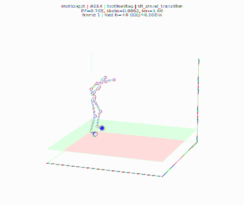
#014 footfloating / sit_stand_transition
000486 seed 20271609
a person walks with arms flapping then brings arms to the front and bends elbows and wrists.
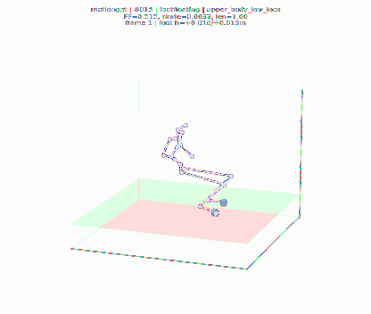
#015 footfloating / upper_body_low_loco
000792 seed 20278608
a person imitates biting into something then waves their right hand around randomly.
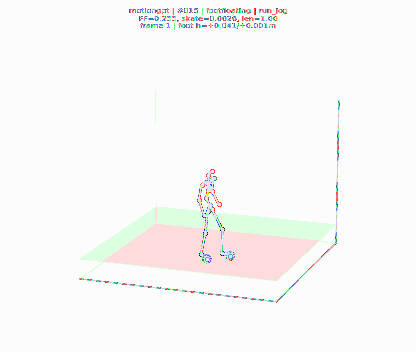
#016 footfloating / run_jog
006383 seed 20400608
subject walks in a full circle, then side steps to turn around and walk around something to avoid running into.
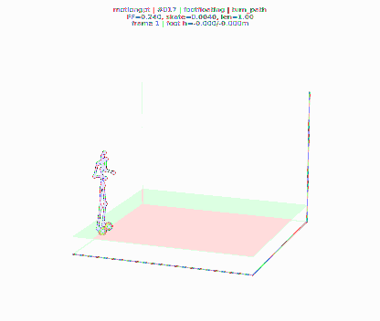
#017 footfloating / turn_path
004320 seed 20347608
a man walks forward slowly, then turns around.
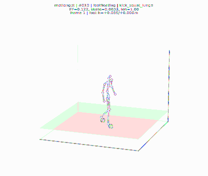
#018 footfloating / kick_squat_lunge
006839 seed 20413608
a person walks around and then crouches down with their arms forward
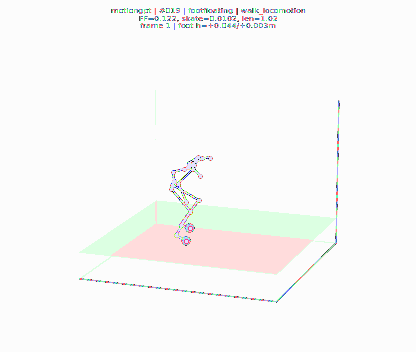
#019 footfloating / walk_locomotion
003423 seed 20323608
a person walking in a crouched over position
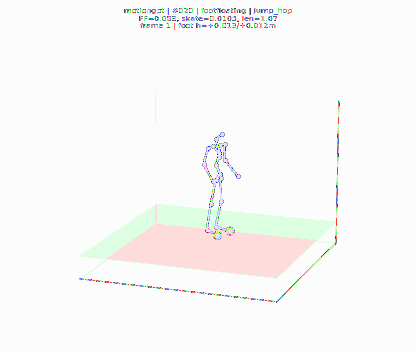
#020 footfloating / jump_hop
009351 seed 20456610
a person squats to almost parallel then jumps to the horizontally to the left.
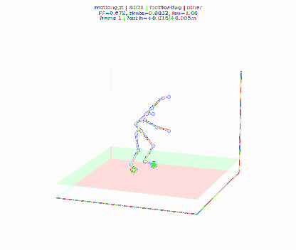
#021 footfloating / other
003823 seed 20332610
person scatches head and armpit like a monkey then pretends to hold a baby
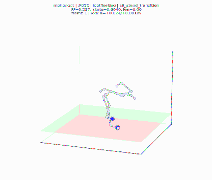
#022 footfloating / sit_stand_transition
004733 seed 20360608
a person is bent over at the waist, motioning forward with their right hand, then stands up.
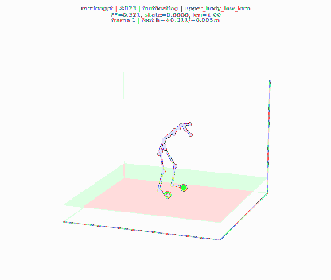
#023 footfloating / upper_body_low_loco
004724 seed 20359609
a person shifts around in place like a zombie, raising their arms up and down.
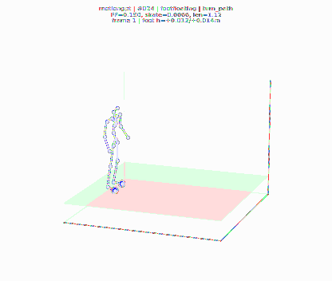
#024 footfloating / turn_path
014565 seed 20558608
person walks forward, turns and walks back
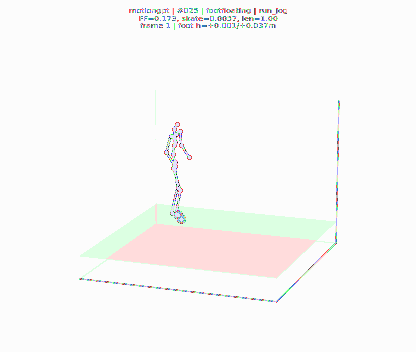
#025 footfloating / run_jog
012219 seed 20512608
person runs in place, stops, then runs in place again. he crouches down and creeps forward starting with his left foot.
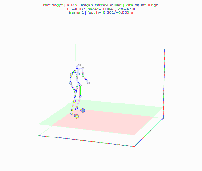
#026 length_control_failure / kick_squat_lunge
005084 seed 20371610
a figure walks forward lightly kicking one foot out
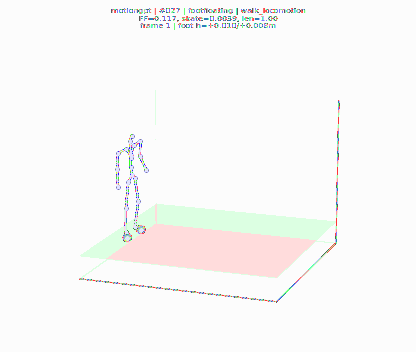
#027 footfloating / walk_locomotion
004975 seed 20367610
a man shrugs his shoulders then takes a step back before waving with his right hand.
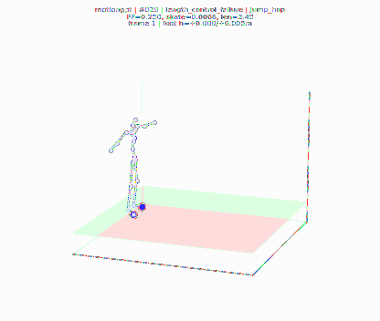
#028 length_control_failure / jump_hop
008157 seed 20437608
a person turns to their left while leaping forward.
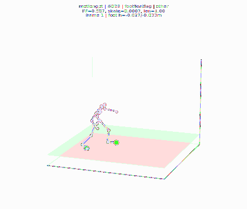
#029 footfloating / other
010248 seed 20481609
a person climbs up some ladders
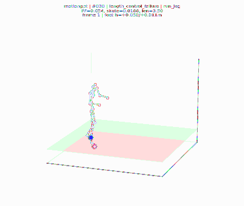
#030 length_control_failure / run_jog
006426 seed 20402608
person runs in a zigzag motion and ducks under an invisible object hlfway through then returns to full height.
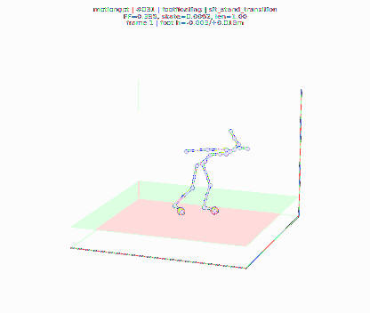
#031 footfloating / sit_stand_transition
013444 seed 20539608
a person bends over and flaps his arms.
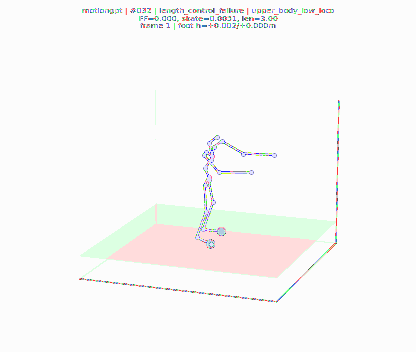
#032 length_control_failure / upper_body_low_loco
008484 seed 20443608
a person stretches their shoulders by moving their bent arms forward and backward.
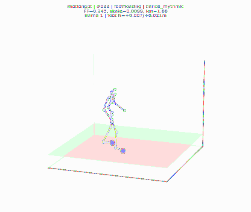
#033 footfloating / dance_rhythmic
003020 seed 20316608
a man slowly sways from side to side, sightly bending his knees.
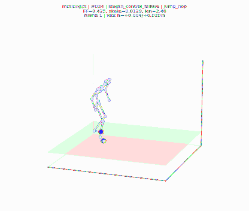
#034 length_control_failure / jump_hop
004117 seed 20340610
a person jumps into wide stance with his arms making a v shape and then jumps back into a normal, relaxed stance.
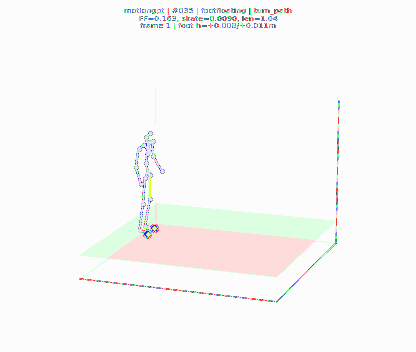
#035 footfloating / turn_path
004350 seed 20348609
a person walks forward and turns and walks backwards.
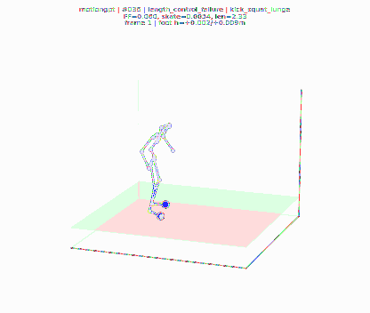
#036 length_control_failure / kick_squat_lunge
010784 seed 20492609
a person with raises their hands in front of them, the squats.
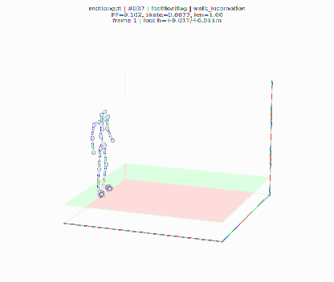
#037 footfloating / walk_locomotion
013208 seed 20535608
ther person walks forward and leans down to pick something up.
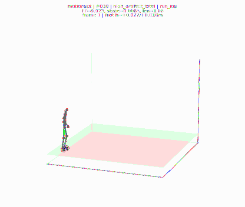
#038 high_artifact_total / run_jog
009924 seed 20468609
the person is running over a vault.
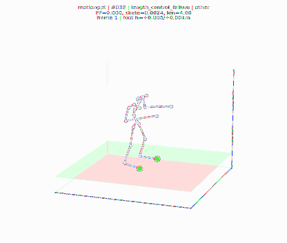
#039 length_control_failure / other
002606 seed 20305608
a man is shadowboxing while standing still.
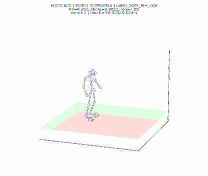
#040 footfloating / upper_body_low_loco
010618 seed 20491610
person is throwing a ball hard.
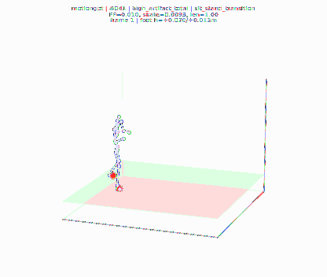
#041 high_artifact_total / sit_stand_transition
014347 seed 20554610
a person is sitting down, using a phone with their hands and puts it up to their ear.
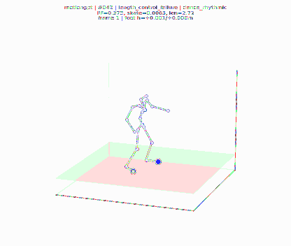
#042 length_control_failure / dance_rhythmic
001215 seed 20282608
a man sways side by side with arms out
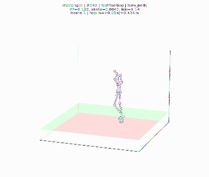
#043 footfloating / turn_path
003942 seed 20335608
walking around in a circle.
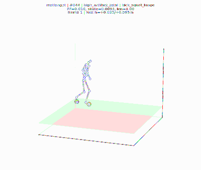
#044 high_artifact_total / kick_squat_lunge
013806 seed 20545609
the figure takes a few steps forward before pick something up turning around and walking back to where they were and crouching down to pick something up.
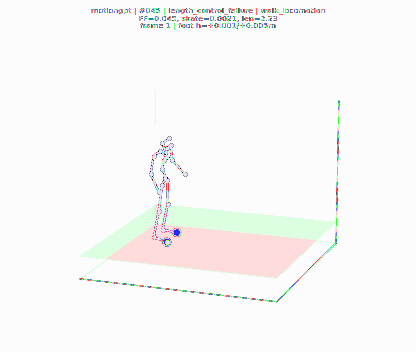
#045 length_control_failure / walk_locomotion
000759 seed 20277608
a person walks unbalanced as if they are on a tight rope.
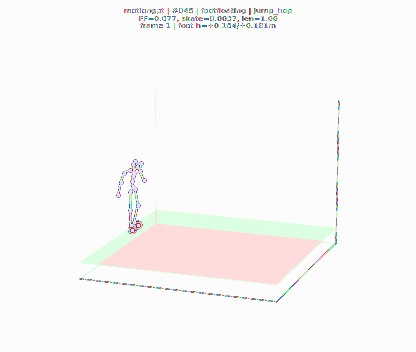
#046 footfloating / jump_hop
013222 seed 20536608
a person hops forward then turns around and hops back past where they started.
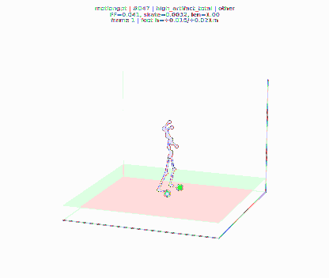
#047 high_artifact_total / other
004870 seed 20365608
a person swing both arms in various ways
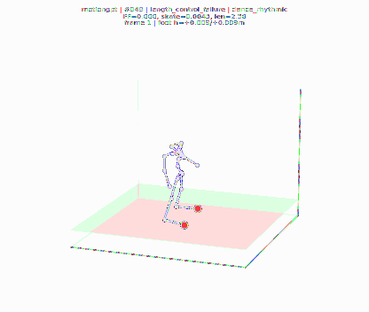
#048 length_control_failure / dance_rhythmic
004364 seed 20349609
the person is wiggling his whole body.
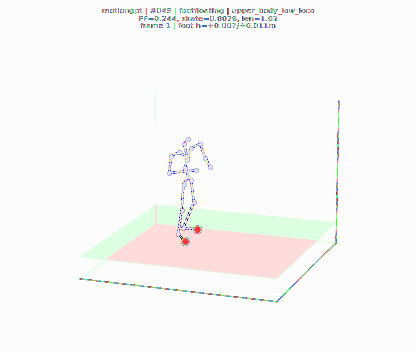
#049 footfloating / upper_body_low_loco
003723 seed 20329609
a person raises their arms to mid level and tends to something (planting a plant?).
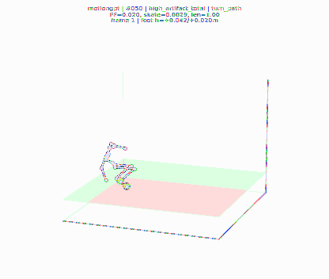
#050 high_artifact_total / turn_path
005818 seed 20387608
a man gets up from the ground pushing off with his left hand then walks in a counter clockwise circle back to where he began then lays down flat on the ground on his back.
#051 length_control_failure / run_jog
004504 seed 20351609
a person jogs for a few steps, then slows to a walk for a few more steps.
#052 footfloating / sit_stand_transition
008904 seed 20451610
a person bends over and then picks up something with his left hand and then the right.
#053 mixed_visible / kick_squat_lunge
005751 seed 20384609
a person balances on their right foot while kicking in multiple directions with their left foot.
#054 high_artifact_total / walk_locomotion
000687 seed 20275608
a person takes in big steps in a hurry walking into the rectangular area while hands are dangling and swinging.
#055 length_control_failure / jump_hop
003481 seed 20324609
a person steps forward and kicks aggressively with their right leg, then quickly squats and jumps.
#056 footskate / run_jog
001617 seed 20289609
a person walking one way and then increasing pace running back
#057 footfloating / other
006652 seed 20409609
the man is doing starjumps
#058 mixed_visible / upper_body_low_loco
009041 seed 20454610
a person does a throwing motion with his right arm
#059 high_artifact_total / turn_path
014002 seed 20547609
a person swings their left arm in a circle forward, then swings it backwards in a circle.
#060 footskate / walk_locomotion
001225 seed 20283609
person walks five steps forward whilst holding right hand extended to the right hand side holding onto something
#061 length_control_failure / sit_stand_transition
012903 seed 20525609
a person stands up while raising their arms.
#062 footfloating / dance_rhythmic
002770 seed 20311608
a person appears to be dancing.
#063 mixed_visible / kick_squat_lunge
002235 seed 20299610
person leans forward goes onto knees whilst first putting left hand on ground for support and stays on knees
#064 length_control_failure / jump_hop
006089 seed 20392608
a person stands still and then bounces their hand as if playing with a yo-yo
#065 high_artifact_total / turn_path
000021 seed 20260608
person is walking normally in a circle
#066 footskate / other
012388 seed 20515609
this person ducks under something then climbs up and over it.
#067 footfloating / sit_stand_transition
010226 seed 20480610
a man stretches arms raised side to side and bends forward.
#068 high_artifact_total / run_jog
013190 seed 20534609
a person beginning to run in a straight line.
#069 mixed_visible / walk_locomotion
008315 seed 20439609
he is self balancing while walking through a narrow bridge.
#070 length_control_failure / upper_body_low_loco
002609 seed 20306608
person is waving hands around.
#071 footfloating / dance_rhythmic
012423 seed 20517608
a man stands with his arms at his sides, and sways slightly to his left.
#072 mixed_visible / kick_squat_lunge
005933 seed 20389608
the person stands still in a slight squat and then turns to their left and walks.
#073 length_control_failure / jump_hop
008349 seed 20441608
a person stands with his two feet apart and light hops in that position 14 times.
#074 footskate / run_jog
006185 seed 20396609
the person is running around in a circle.
#075 high_artifact_total / turn_path
003638 seed 20328610
a figure speedily swings its arms first in a clockwise motion then backwards in an anti clockwise motion while slightly facing to the right
#076 footskate / walk_locomotion
000304 seed 20268610
a person is walking in a steady forward motion.
#077 footfloating / other
006631 seed 20408609
the man pick some thing up from the left and moved it to the right.
#078 mixed_visible / sit_stand_transition
012579 seed 20520608
a person steps forward, then kneels down using their left hand for support.
#079 length_control_failure / kick_squat_lunge
005519 seed 20378609
the guy lunges forward just a bit and the video ends.
#080 footfloating / upper_body_low_loco
006145 seed 20395609
a person reaches for something with both hands, the raises their left hand then sets its hands back down.
#081 length_control_failure / jump_hop
004864 seed 20364608
a person is in a fighting stance with their legs spread and fists raised. they hop forward and kick out with their left foot before returning to their original position.
#082 high_artifact_total / turn_path
007134 seed 20419609
the figure is walking in a counter clockwise motion slowly.
#083 footskate / walk_locomotion
014192 seed 20550608
a person walks forward and then appears to bump into something, then continues walking forward.
#084 mixed_visible / other
006033 seed 20391608
moving the hands and littly band the legs and move front.
#085 footfloating / sit_stand_transition
005676 seed 20382608
a man continuing bending forward at the waist with his arms dangling in front of him.
#086 mixed_visible / upper_body_low_loco
004268 seed 20343608
a man touches his upper right arm with his left hand, then reaches the left hand forward, then touches his left hand to his right sholder and reaches the left hand forward again before lowering it to his left side.
#087 length_control_failure / run_jog
013130 seed 20532608
a person runs forward with one leg crossing in front of the other repetitively before coming to a stop.
#088 mixed_visible / kick_squat_lunge
012668 seed 20522608
a man is standing still, puts his hands together and behind his back, then proceeds to lunge his hands forwards, as if he is fishing, then brings them back in
#089 length_control_failure / jump_hop
013419 seed 20538608
this person jumps up and down on his left leg.
#090 high_artifact_total / turn_path
001976 seed 20295609
a person casually struts in a clockwise oval almost back to their original position, swinging their arms lightly at their side as they walk.
#091 footskate / walk_locomotion
010945 seed 20495610
a person walks forward and gets pushed, he stumbles to the left and then returns to his original path
#092 high_artifact_total / other
013000 seed 20529610
a person stumbles to the right
#093 footfloating / sit_stand_transition
006477 seed 20404608
walking forward then bending down
#094 footfloating / upper_body_low_loco
013675 seed 20544608
a person waves with their right hand, then waves with their left.
#095 length_control_failure / kick_squat_lunge
004303 seed 20346609
a person lifts his right arm, then does a lunge with his left leg
#096 length_control_failure / run_jog
004129 seed 20341608
someone jogs in place, makes a quarter turn to the left and back, jogs backwards and then forwards.
#097 length_control_failure / jump_hop
011643 seed 20504608
a person is doing jumping jacks.
#098 footskate / turn_path
003179 seed 20318610
a person bends over to begin charging forward, turns around with arms raised, and charges back to original position.
#099 high_artifact_total / walk_locomotion
005504 seed 20377610
this person walks forward, swats then walks back.
#100 footskate / turn_path
000629 seed 20272608
a person walks forward gingerly, then walks to the back of the space and turns around
#001 world_footskate / walk_locomotion
012495 seed 20519610
a person walks quickly forward, moving at a slight angle to the right
#002 world_footskate / walk_locomotion
003224 seed 20319610
person walks seven steps from centre back to slightly right of centre
#003 world_footskate / walk_locomotion
001723 seed 20290609
a person taking a huge diagonal step
#004 world_footskate / walk_locomotion
003539 seed 20326609
a person is pushed by their left arm while walking forward.
#005 world_footskate / walk_locomotion
000304 seed 20268608
a person is walking in a steady forward motion.
#006 world_footskate / turn_path
004350 seed 20348610
a person walks forward and turns and walks backwards.
#007 world_footskate / kick_squat_lunge
005519 seed 20378610
the guy lunges forward just a bit and the video ends.
#008 world_footskate / jump_hop
013222 seed 20536608
a person hops forward then turns around and hops back past where they started.
#009 world_footskate / walk_locomotion
014506 seed 20557609
figure walks forward, raises foot to step up and over, uses other foot to drop down, walks forward and stops.
#010 world_footskate / turn_path
011743 seed 20506610
turning body from side to side.
#011 world_footskate / jump_hop
004117 seed 20340609
a person jumps into wide stance with his arms making a v shape and then jumps back into a normal, relaxed stance.
#012 world_footskate / kick_squat_lunge
013806 seed 20545610
the figure takes a few steps forward before pick something up turning around and walking back to where they were and crouching down to pick something up.
#013 world_footskate / run_jog
013130 seed 20532610
a person runs forward with one leg crossing in front of the other repetitively before coming to a stop.
#014 world_footskate / walk_locomotion
000687 seed 20275609
a person takes in big steps in a hurry walking into the rectangular area while hands are dangling and swinging.
#015 world_footskate / other
009123 seed 20455609
a person moves forward quickly and lifts both legs before landing and continuing to move forward.
#016 world_footskate / turn_path
000629 seed 20272608
a person walks forward gingerly, then walks to the back of the space and turns around
#017 world_footskate / jump_hop
008157 seed 20437609
a person turns to their left while leaping forward.
#018 world_footskate / kick_squat_lunge
005084 seed 20371608
a figure walks forward lightly kicking one foot out
#019 world_footskate / upper_body_low_loco
009762 seed 20466610
a person throws a shotput.
#020 world_footskate / sit_stand_transition
005932 seed 20388608
a person stretches their hips, then arms, then bends forwards and steps forwards.
#021 world_footskate / run_jog
009924 seed 20468610
the person is running over a vault.
#022 world_footskate / walk_locomotion
014192 seed 20550608
a person walks forward and then appears to bump into something, then continues walking forward.
#023 world_footskate / turn_path
007134 seed 20419608
the figure is walking in a counter clockwise motion slowly.
#024 world_footskate / other
003584 seed 20327608
a person moves something out of the way in a effort to advance forward.
#025 world_footskate / jump_hop
003481 seed 20324610
a person steps forward and kicks aggressively with their right leg, then quickly squats and jumps.
#026 world_footskate / kick_squat_lunge
009727 seed 20464608
this person reaches to the left then reaches forward with both arms and kicks with right leg.
#027 world_footskate / upper_body_low_loco
010618 seed 20491610
person is throwing a ball hard.
#028 world_footskate / run_jog
006185 seed 20396609
the person is running around in a circle.
#029 world_footskate / walk_locomotion
013174 seed 20533609
a person walks forward and picks up and moves a heavy object.
#030 world_footskate / turn_path
000021 seed 20260609
person is walking normally in a circle
#031 world_footskate / other
010043 seed 20472609
the person is doing the cha-cha.
#032 trajectory_contact_drift / sit_stand_transition
003013 seed 20315608
a person is making rapid up and down, and side to side motions with their right arm, by bending it at the elbow.
#033 world_footskate / dance_rhythmic
002770 seed 20311609
a person appears to be dancing.
#034 world_footskate / jump_hop
005803 seed 20386608
a person takes a small hop forward.
#035 world_footskate / kick_squat_lunge
014326 seed 20553609
person lunges forward with left foot first repeatedly
#036 trajectory_contact_drift / upper_body_low_loco
009041 seed 20454608
a person does a throwing motion with his right arm
#037 trajectory_contact_drift / sit_stand_transition
001801 seed 20292609
a person bends at the waist, outstretching both arms to reach to the right, then the left, then straight in front of them
#038 world_footskate / run_jog
000904 seed 20280608
a person jogs forward and semi circles around to the right and then to the left.
#039 world_footskate / walk_locomotion
006014 seed 20390608
the man take sideways steps to the right.
#040 world_footskate / turn_path
013573 seed 20542608
a person walks in a large circle.
#041 world_footskate / other
008936 seed 20453609
the person is dribbling a basketball backwards
#042 world_footskate / kick_squat_lunge
010199 seed 20479609
a figure wind mill kicks around the mosh pit.
#043 world_footskate / jump_hop
004864 seed 20364608
a person is in a fighting stance with their legs spread and fists raised. they hop forward and kick out with their left foot before returning to their original position.
#044 world_footskate / dance_rhythmic
004364 seed 20349610
the person is wiggling his whole body.
#045 trajectory_contact_drift / upper_body_low_loco
002661 seed 20308609
a person throws something upwards with two hands.
#046 trajectory_contact_drift / sit_stand_transition
010226 seed 20480610
a man stretches arms raised side to side and bends forward.
#047 world_footskate / walk_locomotion
003962 seed 20336610
a person walks in a circular path.
#048 world_footskate / run_jog
001617 seed 20289609
a person walking one way and then increasing pace running back
#049 world_footskate / turn_path
004320 seed 20347609
a man walks forward slowly, then turns around.
#050 world_footskate / other
010409 seed 20485609
the person moves backwards as if pushed by someone in front of them.
#051 footfloating / sit_stand_transition
005712 seed 20383608
sitting down crisscrossed, the right arm chucks forward and chucks forward again.
#052 mixed_visible / kick_squat_lunge
004303 seed 20346610
a person lifts his right arm, then does a lunge with his left leg
#053 world_footskate / jump_hop
006236 seed 20397610
a figure jumps a few times counter-clockwise, then quickly turns clockwise with one big twisting jump, then stumbles backward upon landing.
#054 trajectory_contact_drift / dance_rhythmic
001215 seed 20282610
a man sways side by side with arms out
#055 mixed_visible / upper_body_low_loco
008484 seed 20443610
a person stretches their shoulders by moving their bent arms forward and backward.
#056 jitter_smoothness / jump_hop
013419 seed 20538608
this person jumps up and down on his left leg.
#057 footfloating / other
007624 seed 20424608
a figure is boxing upercuts with is left blue arm and his right red arm stays at a 90 degree angle.
#058 world_footskate / walk_locomotion
014574 seed 20559608
a person walks forward then around off to the side.
#059 trajectory_contact_drift / turn_path
002192 seed 20298608
a man walks forward for a short time, turns slightly to the right to meet back at his starting point then continues forward for a short time and turns left heading back to starting point to create a figure 8.
#060 jitter_smoothness / kick_squat_lunge
005751 seed 20384609
a person balances on their right foot while kicking in multiple directions with their left foot.
#061 footfloating / sit_stand_transition
012903 seed 20525610
a person stands up while raising their arms.
#062 world_footskate / run_jog
006383 seed 20400610
subject walks in a full circle, then side steps to turn around and walk around something to avoid running into.
#063 trajectory_contact_drift / upper_body_low_loco
004724 seed 20359610
a person shifts around in place like a zombie, raising their arms up and down.
#064 trajectory_contact_drift / dance_rhythmic
012423 seed 20517608
a man stands with his arms at his sides, and sways slightly to his left.
#065 mixed_visible / walk_locomotion
009562 seed 20461608
person walks six steps to side with right arm up
#066 jitter_smoothness / turn_path
010116 seed 20474608
a man energetically backsteps, then turns to his right and walks forward, then backsteps again, keeping a spring in his step.
#067 footfloating / other
004063 seed 20338610
a person stands and trying to hold balance.
#068 world_footskate / run_jog
009776 seed 20467610
a figure does a standing sprint
#069 mixed_visible / sit_stand_transition
005676 seed 20382610
a man continuing bending forward at the waist with his arms dangling in front of him.
#070 footfloating / jump_hop
013253 seed 20537608
a person is bent head over toes jumping and throwing arms wildly.
#071 world_footskate / kick_squat_lunge
011101 seed 20498609
a person lightly kicks something with their right leg.
#072 trajectory_contact_drift / upper_body_low_loco
008668 seed 20447608
a person waving one hands in a horizontal circular motion in front of them
#073 trajectory_contact_drift / dance_rhythmic
003020 seed 20316609
a man slowly sways from side to side, sightly bending his knees.
#074 jitter_smoothness / walk_locomotion
003331 seed 20322608
a person walks forward up stairs
#075 mixed_visible / other
012388 seed 20515610
this person ducks under something then climbs up and over it.
#076 footfloating / sit_stand_transition
012579 seed 20520608
a person steps forward, then kneels down using their left hand for support.
#077 mixed_visible / turn_path
004645 seed 20355608
a person walks then stops briefly, he does a 180 degree turn and walks in that direction.
#078 world_footskate / run_jog
006426 seed 20402608
person runs in a zigzag motion and ducks under an invisible object hlfway through then returns to full height.
#079 footfloating / kick_squat_lunge
002235 seed 20299608
person leans forward goes onto knees whilst first putting left hand on ground for support and stays on knees
#080 world_footskate / jump_hop
010447 seed 20486608
doing a cartwheel then jumping up and down.
#081 trajectory_contact_drift / upper_body_low_loco
004270 seed 20344610
person is reaching down.
#082 jitter_smoothness / walk_locomotion
012595 seed 20521610
the person is walking straight backwards.
#083 mixed_visible / other
009443 seed 20459608
a person attempts to get a rock out of their shoe.
#084 footfloating / sit_stand_transition
000486 seed 20271609
a person walks with arms flapping then brings arms to the front and bends elbows and wrists.
#085 mixed_visible / turn_path
002522 seed 20303609
a man steps to the left steps in a small clockwise circle throws left arm then steps in a larger backward clockwise circle
#086 world_footskate / run_jog
004129 seed 20341608
someone jogs in place, makes a quarter turn to the left and back, jogs backwards and then forwards.
#087 trajectory_contact_drift / kick_squat_lunge
009405 seed 20457610
a person walks forward and bends down and grabs his left knee in pain. he attempts to straighten up and walk forward and then bends down to grab his knee again. he then walks backward to his left.
#088 footfloating / jump_hop
006089 seed 20392610
a person stands still and then bounces their hand as if playing with a yo-yo
#089 trajectory_contact_drift / upper_body_low_loco
002609 seed 20306609
person is waving hands around.
#090 jitter_smoothness / walk_locomotion
007626 seed 20425609
a man stands on the ground ,walks anticlockwise and then stops.
#091 mixed_visible / other
010248 seed 20481610
a person climbs up some ladders
#092 world_footskate / turn_path
014171 seed 20549610
a walking man bumps something with his right leg then turns and walks in another direction.
#093 footfloating / jump_hop
008349 seed 20441610
a person stands with his two feet apart and light hops in that position 14 times.
#094 world_footskate / run_jog
004504 seed 20351610
a person jogs for a few steps, then slows to a walk for a few more steps.
#095 trajectory_contact_drift / sit_stand_transition
014395 seed 20555610
a person seeming to be sitting down and reaching over seeming to be taking a drink and sipping from it.
#096 footfloating / kick_squat_lunge
012668 seed 20522608
a man is standing still, puts his hands together and behind his back, then proceeds to lunge his hands forwards, as if he is fishing, then brings them back in
#097 trajectory_contact_drift / upper_body_low_loco
011223 seed 20499608
this person waves his right arm up and down as if to enjoy a beat.
#098 jitter_smoothness / walk_locomotion
004823 seed 20361610
a person walks down stairs holding on to something on the right.
#099 jitter_smoothness / walk_locomotion
012290 seed 20513608
someone walks up a flight of stairs.
#100 jitter_smoothness / walk_locomotion
004852 seed 20362608
person is walking like they are on a beam, arms out.
#001 footfloating / walk_locomotion
005537 seed 20380609
a figure walks upstairs without a handrail.
#002 footfloating / walk_locomotion
004601 seed 20353610
someone is climbing a ladder, they walk up 3 steps and then back down.
#003 footfloating / walk_locomotion
004823 seed 20361608
a person walks down stairs holding on to something on the right.
#004 footfloating / walk_locomotion
002357 seed 20300608
a headless line figure takes four steps forward, down a ramp, toward the viewer.
#005 footfloating / jump_hop
008349 seed 20441609
a person stands with his two feet apart and light hops in that position 14 times.
#006 footfloating / walk_locomotion
006814 seed 20412610
a person walks forward and then up stairs
#007 footfloating / turn_path
000021 seed 20260609
person is walking normally in a circle
#008 footfloating / kick_squat_lunge
012668 seed 20522608
a man is standing still, puts his hands together and behind his back, then proceeds to lunge his hands forwards, as if he is fishing, then brings them back in
#009 footfloating / jump_hop
008157 seed 20437609
a person turns to their left while leaping forward.
#010 footfloating / walk_locomotion
013174 seed 20533609
a person walks forward and picks up and moves a heavy object.
#011 footfloating / turn_path
002522 seed 20303608
a man steps to the left steps in a small clockwise circle throws left arm then steps in a larger backward clockwise circle
#012 footfloating / kick_squat_lunge
005519 seed 20378610
the guy lunges forward just a bit and the video ends.
#013 footfloating / other
010843 seed 20493610
a person holds their right arm out on something to support them while sticking their right leg up to balance.
#014 footfloating / sit_stand_transition
014347 seed 20554608
a person is sitting down, using a phone with their hands and puts it up to their ear.
#015 footfloating / jump_hop
008528 seed 20445608
jumping up and down.
#016 footfloating / upper_body_low_loco
009762 seed 20466608
a person throws a shotput.
#017 footfloating / walk_locomotion
003423 seed 20323609
a person walking in a crouched over position
#018 footfloating / run_jog
004129 seed 20341610
someone jogs in place, makes a quarter turn to the left and back, jogs backwards and then forwards.
#019 footfloating / turn_path
003942 seed 20335609
walking around in a circle.
#020 footfloating / kick_squat_lunge
006839 seed 20413610
a person walks around and then crouches down with their arms forward
#021 footfloating / other
002606 seed 20305610
a man is shadowboxing while standing still.
#022 footfloating / jump_hop
011643 seed 20504608
a person is doing jumping jacks.
#023 footfloating / sit_stand_transition
013444 seed 20539610
a person bends over and flaps his arms.
#024 footfloating / upper_body_low_loco
002661 seed 20308608
a person throws something upwards with two hands.
#025 footfloating / walk_locomotion
003321 seed 20321610
a man stands with arms on the side, leans to the right and moves one step to the right.
#026 footfloating / run_jog
009776 seed 20467610
a figure does a standing sprint
#027 complex_pose_contact / turn_path
010116 seed 20474610
a man energetically backsteps, then turns to his right and walks forward, then backsteps again, keeping a spring in his step.
#028 footfloating / kick_squat_lunge
013806 seed 20545610
the figure takes a few steps forward before pick something up turning around and walking back to where they were and crouching down to pick something up.
#029 complex_pose_contact / run_jog
001617 seed 20289610
a person walking one way and then increasing pace running back
#030 footfloating / other
001152 seed 20281608
a person performs a typical broadjump.
#031 complex_pose_contact / walk_locomotion
004518 seed 20352610
a person walks forward and rubs an object in front of them with their right hand.
#032 footfloating / jump_hop
004864 seed 20364609
a person is in a fighting stance with their legs spread and fists raised. they hop forward and kick out with their left foot before returning to their original position.
#033 complex_pose_contact / turn_path
014002 seed 20547608
a person swings their left arm in a circle forward, then swings it backwards in a circle.
#034 footfloating / dance_rhythmic
002770 seed 20311609
a person appears to be dancing.
#035 complex_pose_contact / kick_squat_lunge
008382 seed 20442608
a person does squats with raised hands, pushing their hand bove their head when they stand up from the squat.
#036 footfloating / sit_stand_transition
005712 seed 20383608
sitting down crisscrossed, the right arm chucks forward and chucks forward again.
#037 complex_pose_contact / upper_body_low_loco
000792 seed 20278609
a person imitates biting into something then waves their right hand around randomly.
#038 mixed_visible / other
012400 seed 20516608
someone sees something on the ground the they move slowly away from
#039 footfloating / dance_rhythmic
003020 seed 20316609
a man slowly sways from side to side, sightly bending his knees.
#040 complex_pose_contact / walk_locomotion
005037 seed 20369609
the drunk guy struggles to walk down the street
#041 mixed_visible / upper_body_low_loco
004270 seed 20344608
person is reaching down.
#042 footfloating / jump_hop
013253 seed 20537608
a person is bent head over toes jumping and throwing arms wildly.
#043 complex_pose_contact / run_jog
006383 seed 20400609
subject walks in a full circle, then side steps to turn around and walk around something to avoid running into.
#044 mixed_visible / sit_stand_transition
001888 seed 20294609
the person is kneeling down on all fours to begin to crawl
#045 footfloating / turn_path
007715 seed 20428609
a person leans forward with their right hand as if to pick something up, walks to the left, turns right, and leans to pick something up again, then moves right arm as if to wipe something.
#046 complex_pose_contact / kick_squat_lunge
010557 seed 20488610
person puts hands on head then chest then knees then toes
#047 mixed_visible / other
002741 seed 20309609
the man performed a tennis smash that won the match.
#048 footfloating / dance_rhythmic
001215 seed 20282608
a man sways side by side with arms out
#049 complex_pose_contact / run_jog
012219 seed 20512608
person runs in place, stops, then runs in place again. he crouches down and creeps forward starting with his left foot.
#050 mixed_visible / upper_body_low_loco
010618 seed 20491609
person is throwing a ball hard.
#051 footfloating / jump_hop
013222 seed 20536608
a person hops forward then turns around and hops back past where they started.
#052 complex_pose_contact / turn_path
014171 seed 20549608
a walking man bumps something with his right leg then turns and walks in another direction.
#053 rare_footskate / walk_locomotion
003255 seed 20320610
a person walking straight forward.
#054 mixed_visible / kick_squat_lunge
002171 seed 20297608
a person who sits down on there knees
#055 footfloating / sit_stand_transition
004733 seed 20360609
a person is bent over at the waist, motioning forward with their right hand, then stands up.
#056 temporal_smoothness / other
009123 seed 20455610
a person moves forward quickly and lifts both legs before landing and continuing to move forward.
#057 complex_pose_contact / walk_locomotion
003539 seed 20326608
a person is pushed by their left arm while walking forward.
#058 mixed_visible / upper_body_low_loco
010161 seed 20478610
a person stands still and raises their arms in basketball signal motions.
#059 temporal_smoothness / run_jog
006185 seed 20396608
the person is running around in a circle.
#060 rare_footskate / turn_path
011402 seed 20503609
a person slowly walks in a 3/4 circle.
#061 footfloating / jump_hop
004117 seed 20340609
a person jumps into wide stance with his arms making a v shape and then jumps back into a normal, relaxed stance.
#062 complex_pose_contact / sit_stand_transition
012579 seed 20520610
a person steps forward, then kneels down using their left hand for support.
#063 mixed_visible / kick_squat_lunge
008333 seed 20440609
a figure does light squats while holding an overhead bar
#064 rare_footskate / dance_rhythmic
004364 seed 20349608
the person is wiggling his whole body.
#065 temporal_smoothness / walk_locomotion
000687 seed 20275608
a person takes in big steps in a hurry walking into the rectangular area while hands are dangling and swinging.
#066 footfloating / other
010248 seed 20481609
a person climbs up some ladders
#067 complex_pose_contact / run_jog
000904 seed 20280608
a person jogs forward and semi circles around to the right and then to the left.
#068 mixed_visible / sit_stand_transition
014395 seed 20555608
a person seeming to be sitting down and reaching over seeming to be taking a drink and sipping from it.
#069 temporal_smoothness / kick_squat_lunge
005084 seed 20371609
a figure walks forward lightly kicking one foot out
#070 rare_footskate / turn_path
004350 seed 20348609
a person walks forward and turns and walks backwards.
#071 footfloating / jump_hop
006089 seed 20392609
a person stands still and then bounces their hand as if playing with a yo-yo
#072 complex_pose_contact / upper_body_low_loco
009041 seed 20454610
a person does a throwing motion with his right arm
#073 complex_pose_contact / dance_rhythmic
012423 seed 20517608
a man stands with his arms at his sides, and sways slightly to his left.
#074 mixed_visible / other
009716 seed 20463610
the person is doing basketball signals.
#075 rare_footskate / walk_locomotion
000304 seed 20268610
a person is walking in a steady forward motion.
#076 temporal_smoothness / run_jog
004504 seed 20351610
a person jogs for a few steps, then slows to a walk for a few more steps.
#077 footfloating / jump_hop
011797 seed 20507610
a person is attempting to jump rope by hopping from one leg to the other as if running in place, but has to reset every two to three jumps.
#078 mixed_visible / turn_path
006701 seed 20410610
a person walks forward then turns to the left.
#079 footfloating / sit_stand_transition
005932 seed 20388610
a person stretches their hips, then arms, then bends forwards and steps forwards.
#080 complex_pose_contact / kick_squat_lunge
002235 seed 20299610
person leans forward goes onto knees whilst first putting left hand on ground for support and stays on knees
#081 mixed_visible / upper_body_low_loco
002609 seed 20306608
person is waving hands around.
#082 rare_footskate / other
008936 seed 20453610
the person is dribbling a basketball backwards
#083 temporal_smoothness / walk_locomotion
003331 seed 20322609
a person walks forward up stairs
#084 rare_footskate / run_jog
006426 seed 20402609
person runs in a zigzag motion and ducks under an invisible object hlfway through then returns to full height.
#085 temporal_smoothness / turn_path
007134 seed 20419609
the figure is walking in a counter clockwise motion slowly.
#086 footfloating / jump_hop
010447 seed 20486609
doing a cartwheel then jumping up and down.
#087 complex_pose_contact / kick_squat_lunge
009727 seed 20464609
this person reaches to the left then reaches forward with both arms and kicks with right leg.
#088 mixed_visible / upper_body_low_loco
012981 seed 20527608
a person waves their arms over their heads.
#089 footfloating / sit_stand_transition
008904 seed 20451610
a person bends over and then picks up something with his left hand and then the right.
#090 rare_footskate / walk_locomotion
014192 seed 20550608
a person walks forward and then appears to bump into something, then continues walking forward.
#091 temporal_smoothness / other
010037 seed 20471610
a right handed golfer takes a golf swing.
#092 complex_pose_contact / turn_path
003638 seed 20328608
a figure speedily swings its arms first in a clockwise motion then backwards in an anti clockwise motion while slightly facing to the right
#093 mixed_visible / jump_hop
009351 seed 20456609
a person squats to almost parallel then jumps to the horizontally to the left.
#094 temporal_smoothness / run_jog
013130 seed 20532610
a person runs forward with one leg crossing in front of the other repetitively before coming to a stop.
#095 footfloating / sit_stand_transition
001801 seed 20292610
a person bends at the waist, outstretching both arms to reach to the right, then the left, then straight in front of them
#096 complex_pose_contact / kick_squat_lunge
011101 seed 20498609
a person lightly kicks something with their right leg.
#097 mixed_visible / upper_body_low_loco
007742 seed 20429608
a person waves a friendly hello.
#098 rare_footskate / walk_locomotion
010076 seed 20473608
a person who is standing with his hands by his sides takes four very slow steps forward.
#099 temporal_smoothness / other
002928 seed 20314609
a person stumbling to their right side.
#100 rare_footskate / walk_locomotion
014222 seed 20551609
a blind folded person walks around.